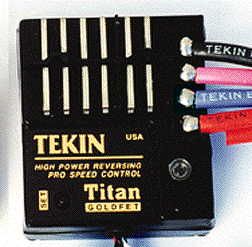

At last, a reversing speed control that is powerful enough to handle a hot modified motor, down to 10 turns, without overheating or shutting off. The all new REBEL uses new Thermal Transfer Technology to make it possible, at a practical price. Let the REBEL take you where others dare not!
FEATURES: Features QuickTune setup, Fully Proportional Fwd/Brk/Rev Controls, Adjustable Reverse Delay 0-5 seconds. Reverse lock-out Mode allows use in sanctioned racing events. Rebel has Factory Installed Motor and Battery Connectors. NEW GoldFET III Transistors deliver 40% more power handling, for cool operation and more speed. No motor limit, but 10 + turns recommended.
REBEL, PART#2210
$129.00
TITAN High-Power Reversing ESC

The TITAN is the world's most powerful reversing high frequency R/C speed control. With two rows of GoldFET transistors, 12 total, the Titan can power single hot or dual mild modified motors. Stunts, wheelies, tricks are all a breeze, as well as blazing speed. Get High-Amp Power and Fun with the Titan.
FEATURES: Features QuickTune setup, Fully Proportional Fwd/Brk/Rev Controls, Adjustable Reverse Delay 0-5 seconds. Reverse lock-out Mode allows use in sanctioned racing events. Titan has large 12 GA replaceable wires, and super -low voltage drop.